SAT Platform
Digital SAT tayyorlov platformasi — foydalanuvchi qo'llanmasi
O'quvchi · O'qituvchi · Administrator · Ota-ona
Versiya 1.0 · Oktabr 2026
Sayt: https://sat-platform-9jc4.onrender.com · Telegram bot: @this_is_Personalbot
Mundarija
- Platforma nima va qanday ishlaydi
- Kirish va ro'yxatdan o'tish (sayt va Telegram bot)
- O'quvchi uchun: bosh sahifa, testlar, test oynasi, mashq, xatolar, tahlil, materiallar, uy vazifasi, profil
- O'qituvchi va assistent uchun: guruhlar, o'quvchilar, davomat, test tayinlash, uy vazifasi, tahlil
- Administrator uchun: savollar banki, test builder, o'quvchilar, xodimlar, guruhlar, materiallar, sozlamalar, audit
- Ota-ona uchun
- Telegram bot buyruqlari va bildirishnomalar
- Tez-tez so'raladigan savollar
- Demo hisoblar
1. Platforma nima va qanday ishlaydi
SAT Platform — o'quv markazi uchun Digital SAT tayyorlov tizimi. Uning markazida o'quv sikli turadi:
Diagnostik test → natija → zaif skilllar → mavzu bo'yicha mashq → xatolarni ko'rib chiqish → qayta mashq → to'liq SAT mock → ball → progress tahlili → keyingi mashq.
O'quvchi har kirganda bosh sahifa «Bugun nimani mashq qilish kerak?» degan savolga javob beradi. O'qituvchi o'z guruhlarini, davomatni va o'quvchilar progressini kuzatadi. Administrator savollar banki, testlar, o'quvchilar va sozlamalarni boshqaradi. Ota-ona farzandining ballari, davomati va zaif mavzularini ko'radi.
Rollar
| Rol | Nima qila oladi |
|---|
| Super admin / Admin | Hamma narsa: savollar, testlar, o'quvchilar, xodimlar, guruhlar, sozlamalar, audit. Super admin — boshqa adminlarni ham boshqaradi. |
| O'qituvchi | Faqat o'ziga biriktirilgan guruhlar va o'quvchilar: davomat, test tayinlash, uy vazifasi, progress. Admin ruxsat bersa — savollar bankida ham ishlaydi. |
| Assistent | O'qituvchi kabi, lekin cheklangan: davomat, o'quvchilar ro'yxati, uy vazifasini tekshirish, progressni ko'rish. |
| O'quvchi | Testlar, mashq, xatolar, tahlil, materiallar, uy vazifasi. |
| Ota-ona | Faqat ko'radi: farzandining ballari, testlari, davomati, zaif skilllari. |
2. Kirish va ro'yxatdan o'tish
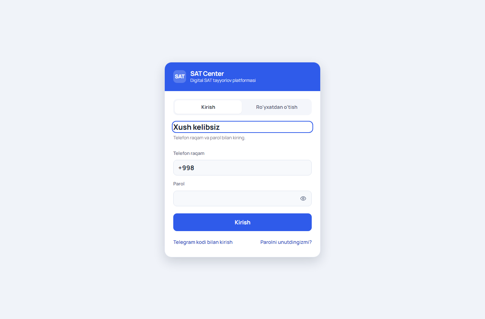
Kirish oynasi: telefon raqam va parol.
Parol bilan kirish
- Saytni oching, telefon raqamingizni (
+998 90 123 45 67) va parolni kiriting.
- «Kirish» tugmasini bosing. Rolingizga qarab bosh sahifa ochiladi.
Telegram kodi bilan kirish (parolni unutganda ham)
- Kirish oynasida «Telegram kodi bilan kirish» ni bosing va raqamingizni kiriting.
- Agar raqamingiz botga bog'lanmagan bo'lsa, «Telegram botni ochish» tugmasi chiqadi: botda Start ni bosing va «Telefon raqamni yuborish» tugmasini bosing.
- 5 xonali kod botga keladi — saytga kiriting. Keyin Profil bo'limida yangi parol o'rnating.
Saytda ro'yxatdan o'tish
- «Ro'yxatdan o'tish» yorlig'ini tanlang, rolni belgilang: O'quvchi yoki Ota-ona.
- Telefon raqamni kiriting → kod Telegram botga keladi → kodni tasdiqlang.
- Ism-familiya, parol kiriting. O'quvchi maqsad ballini (masalan 1400) yozishi mumkin; ota-ona farzandining ota-ona kodini kiritadi (kod o'quvchi profilida ko'rsatiladi).
Telegram botning o'zida ro'yxatdan o'tish
- @this_is_Personalbot ni oching, Start bosing, «Telefon raqamni yuborish» ni bosing.
- Raqam ro'yxatda bo'lmasa bot so'raydi: kimsiz (o'quvchi / ota-ona) → ism-familiya → (ota-ona uchun) farzand kodi.
- Bot saytga kirish havolasini yuboradi (15 daqiqa amal qiladi). Saytda Profil → Parol bo'limida parol o'rnating — keyin telefon va parol bilan ham kira olasiz.
- Istalgan vaqt
/login buyrug'i yangi kirish havolasini beradi.
O'qituvchi, assistent va admin hisoblarini faqat administrator yaratadi (Xodimlar va ota-onalar bo'limi). Mustaqil ro'yxatdan o'tishni admin Sozlamalarda o'chirib qo'yishi mumkin.
3. O'quvchi uchun
3.1. Bosh sahifa
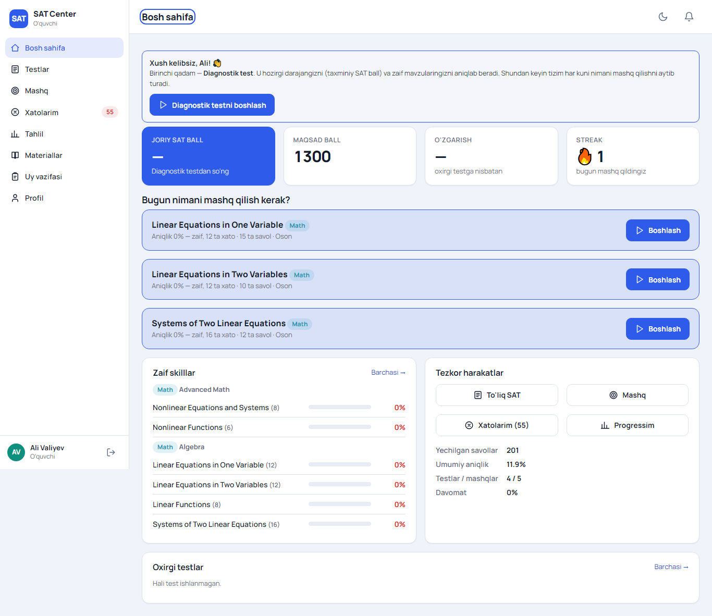
Bosh sahifa: joriy ball, maqsad, o'zgarish, streak, tavsiya qilingan mashq, zaif skilllar, oxirgi testlar.
- Joriy SAT ball — oxirgi to'liq testning taxminiy bali (R&W + Math). Diagnostik testdan so'ng paydo bo'ladi.
- Maqsad ball va unga progress (400 dan maqsadgacha bo'lgan yo'lning necha foizi bosib o'tilgani).
- O'zgarish — oldingi testga nisbatan farq. Streak — ketma-ket necha kun mashq qilganingiz.
- Bugun nimani mashq qilish kerak? — tizim eng zaif, eng sekin va eng ko'p xato qilingan skilllardan tavsiya beradi. «Boshlash» bosilsa mashq darhol boshlanadi.
Birinchi qadam — Diagnostik test (Testlar bo'limida). U darajangizni va zaif mavzularingizni aniqlab beradi; shundan keyin tavsiyalar ishga tushadi.
3.2. Testlar
«Testlar» bo'limida mavjud testlar: Diagnostik, To'liq SAT (mock), Bo'lim testi (faqat R&W yoki Math), Modul va Mavzu testlari. Tayinlangan testlarda muddat va urinishlar soni ko'rsatiladi. «Mening urinishlarim» yorlig'ida barcha natijalaringiz.
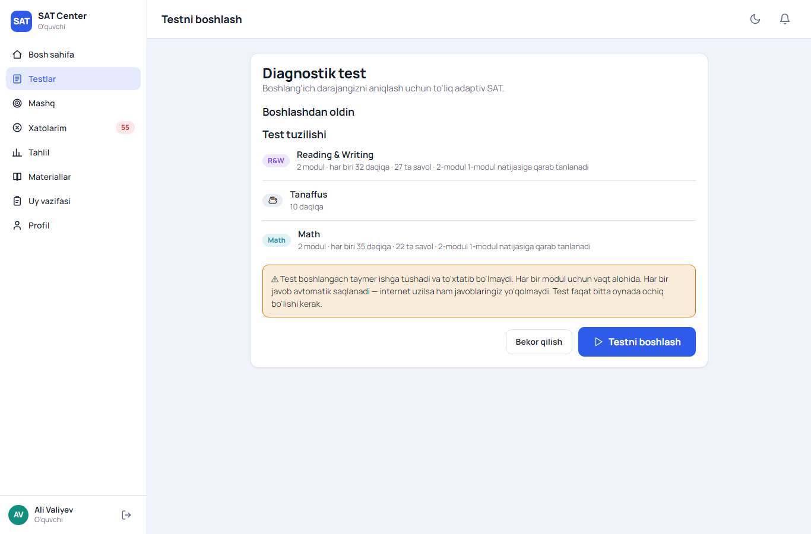
Testni boshlashdan oldin: qurilma tekshiruvi va test tuzilishi.
«Testni boshlash» bosilganda tizim internet, brauzer, ekran va lokal saqlashni tekshiradi, test tuzilishini (modullar, vaqt, tanaffus) ko'rsatadi. Tasdiqlagach taymer ishga tushadi.
3.3. Test oynasi
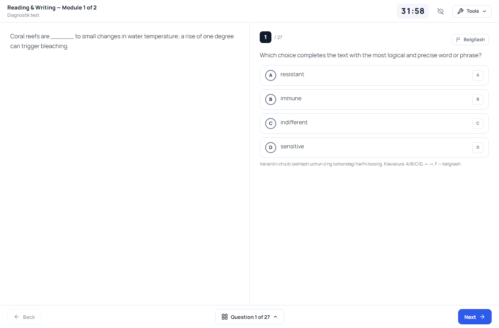
Chapda passage/kontekst, o'ngda savol va variantlar; yuqorida modul nomi, taymer va Tools; pastda Back/Next va savollar jadvali.
- Taymer har modul uchun alohida (R&W 32 daqiqa, Math 35 daqiqa standart). 5 daqiqa qolganda qizaradi. Ko'z belgisi bilan yashirish mumkin. Vaqt serverda hisoblanadi — sahifani yangilash yoki internet uzilishi vaqtni to'xtatmaydi.
- Javob — variantni bosing (yoki klaviaturada A B C D). Har bir javob darhol saqlanadi. Internet uzilsa javoblar brauzerda saqlanib, ulanish qaytgach yuboriladi.
- Chizib tashlash — variant o'ng tomonidagi harfni bosing; bu faqat sizning belgingiz, javob hisobiga ta'sir qilmaydi.
- Belgilash (Flag) — savolga keyin qaytish uchun (F).
- Savollar jadvali — pastdagi «Question N of M» tugmasi (G): javob berilgan, berilmagan va belgilangan savollar; istalgan savolga o'tish.
- Math SPR (ochiq javob) — butun son, manfiy son, o'nlik kasr (0.75) yoki oddiy kasr (3/4). Ko'pi bilan 5 ta belgi (manfiy bo'lsa 6). 2/3 ni .666 yoki .667 deb yozish ham to'g'ri hisoblanadi.
- Tools: Math'da kalkulyator va reference sheet (formulalar); R&W'da matnni bo'yash (annotation) va line reader (qator chizg'ichi); klaviatura tugmalari ro'yxati; testdan chiqish.
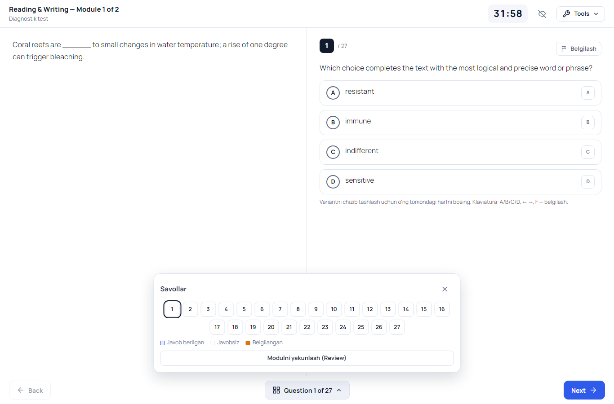
Savollar jadvali va «Modulni yakunlash».
Module Review. Oxirgi savoldan keyin (yoki jadvaldan) «Review» ochiladi: nechta javob berilgan, javobsiz va belgilangan savollar. Istalganiga qaytish mumkin. «Modulni yakunlash» bosilgach modulga qaytib bo'lmaydi. Vaqt tugasa modul avtomatik yakunlanadi.
Adaptiv routing. Diagnostik va to'liq testlarda 1-modul natijasiga qarab 2-modul osonroq (Easy) yoki qiyinroq (Hard) bo'ladi. Hard yo'nalishda yuqoriroq ball olish mumkin.
Tanaffus. R&W bo'limidan keyin 10 daqiqa tanaffus (taymer bilan). «Tanaffusni tugatish» bilan erta davom etish mumkin.
Test faqat bitta oynada ochiq bo'lishi kerak. Ikkinchi oynada «Bu test boshqa oynada ochiq» xabari chiqadi. Brauzer yopilib qolsa, 20 soniyadan so'ng shu yerdan davom ettirish mumkin — javoblar va vaqt saqlanadi.
3.4. Natija va javoblarni ko'rish
Test tugagach umumiy ball, R&W va Math ballari, oldingi test bilan farq va shu testdagi skilllar aniqligi ko'rsatiladi. «Javoblarni ko'rish» — har bir savol: sizning javobingiz, to'g'ri javob, sarflangan vaqt, skill, qiyinlik va izoh (explanation), bo'lsa video izoh. «Xato», «Belgilangan» filtrlari bor. Xato savol ostida «Shu skillni mashq qilish» tugmasi.
3.5. Mashq
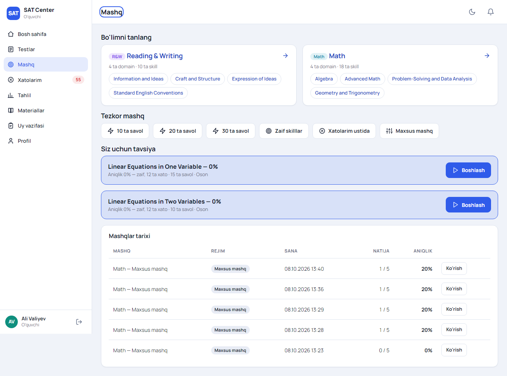
Mashq: bo'lim tanlash, tezkor mashq, tavsiyalar, tarix.
- Bo'lim → Domain → Skill bo'yicha maxsus mashq: qiyinlik, savollar soni (1–60) va vaqt (ixtiyoriy).
- Tezkor mashq: 10 / 20 / 30 ta savol. Zaif skilllar: tizim aniqlagan zaif mavzulardan. Xatolarim ustida: oldingi xatolar va shu skilldan yangi savollar.
- Mashqda har javobdan keyin darhol to'g'ri/noto'g'ri va izoh ko'rsatiladi («Javobni tasdiqlash» bosilgach).
- Natija sahifasida aniqlik, o'rtacha vaqt, skilllar bo'yicha natija, «Ko'rib chiqish» va «Yana mashq qilish».
3.6. Xatolarim
Test va mashqlarda xato qilingan savollar avtomatik to'planadi. Skill bo'yicha guruhlar, «So'nggi» / «Ko'p takrorlangan» tartiblash, «Faqat hal qilinmagan» filtri. Savolni ochib izohni o'qing; keyinchalik shu savolni to'g'ri yechsangiz u «hal qilingan» bo'ladi.
3.7. Tahlil (Mening progressim)
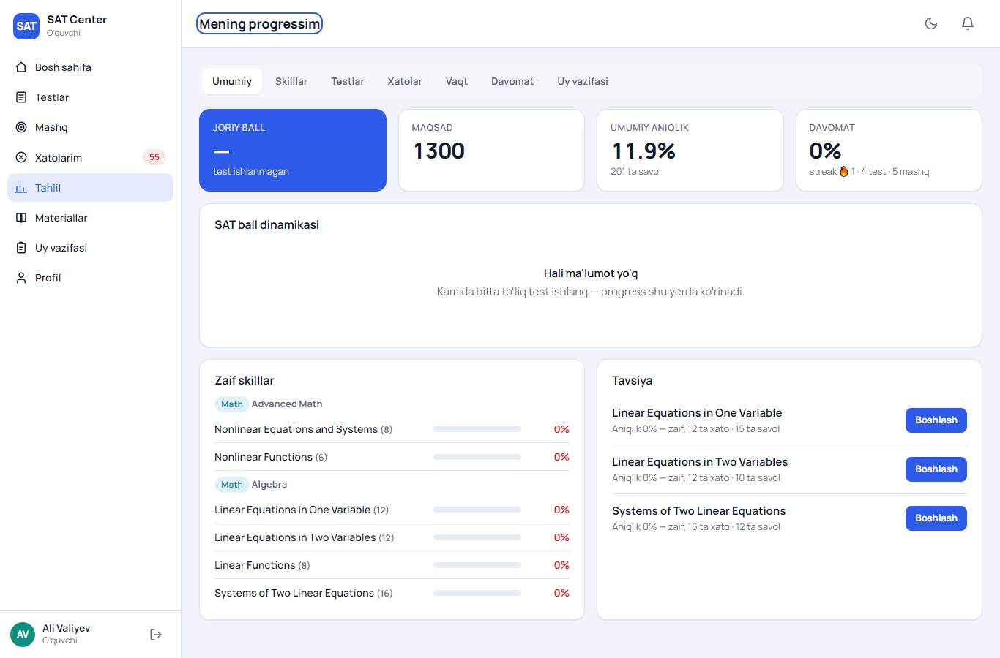
Tahlil: ball dinamikasi, zaif skilllar, tavsiyalar; yorliqlar: Skilllar, Testlar, Xatolar, Vaqt, Davomat, Uy vazifasi.
- Ball dinamikasi — barcha to'liq testlar grafigi (umumiy, R&W, Math).
- Skilllar — har bir skill aniqligi: qizil (zaif, 50% dan past), sariq (o'rta), yashil (kuchli, 75% dan yuqori).
- Vaqt — o'rtacha vaqt, to'g'ri/xato javoblarda, qiyinlik va skill bo'yicha eng sekin mavzular.
3.8. Materiallar, uy vazifasi, profil, bildirishnomalar
- Materiallar — o'qituvchi/admin yuklagan fayllar va havolalar, kategoriya bo'yicha.
- Uy vazifasi — berilgan vazifalar, muddat va holat. Mashq turidagi vazifa «Boshlash» bilan ochiladi; test turi — Testlar sahifasida; fayl turi — matn yoki fayl yuklab topshiriladi. Tekshirilgach ball va o'qituvchi izohi ko'rinadi.
- Profil — ism, maqsad ball, bildirishnoma sozlamalari, parol, Telegram holati, guruhlaringiz va ota-ona kodi (ota-onangizga bering).
- Bildirishnomalar (qo'ng'iroq belgisi) — natijalar, tayinlangan testlar, uy vazifalari, davomat.
4. O'qituvchi va assistent uchun
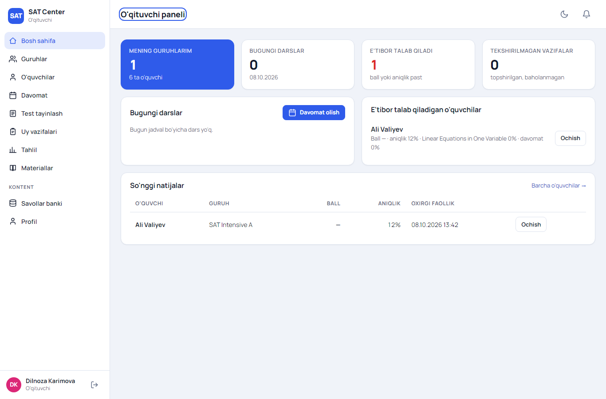
O'qituvchi paneli: guruhlar, bugungi darslar, e'tibor talab qiladigan o'quvchilar, so'nggi natijalar.
4.1. Guruhlar va o'quvchilar
«Guruhlar» — sizga biriktirilgan guruhlar: o'rtacha ball, aniqlik, davomat. Guruh ichida yorliqlar: O'quvchilar (ball, maqsad, aniqlik, davomat, eng zaif skill), Progress (guruhning zaif skilllari, reyting), Davomat (30 kunlik jadval), Testlar, Uy vazifalari. «O'quvchilar» bo'limida qidirish va tartiblash (ism, ball, eng zaif, faollik). O'quvchini ochsangiz to'liq progress paneli (tahlil, skilllar, testlar, xatolar, vaqt, davomat, uy vazifasi) ko'rinadi.
O'qituvchi faqat o'z guruhidagi o'quvchilarni ko'radi va o'quvchi javoblarini o'zgartira olmaydi.
4.2. Davomat
- «Davomat» → guruh va sanani tanlang (bugungi dars avtomatik tanlanadi).
- Har bir o'quvchi uchun: Keldi / Kelmadi / Kechikdi (daqiqa bilan) / Sababli. «Hammasi keldi» tugmasi bor.
- «Davomatni saqlash». Kelmagan va kechikkan o'quvchilarning ota-onasiga Telegram orqali xabar ketadi.
4.3. Test tayinlash
«Test tayinlash» → chop etilgan testni tanlang → guruh yoki alohida o'quvchi → boshlanish va muddat → urinishlar soni (bo'sh = cheksiz) → «Tayinlash». O'quvchilarga bildirishnoma ketadi. Ro'yxatdagi tayinlov yonidagi «Natijalar» — kim ishlagan, ballari, javoblari.
4.4. Uy vazifasi
«Uy vazifalari» → «Yangi vazifa»: sarlavha, tavsif, kimga (guruh/o'quvchi), tur:
- Savollar (mashq) — bo'lim/domain/skill, qiyinlik, savollar soni. O'quvchi mashq sifatida ishlaydi, natija avtomatik yoziladi.
- Test — chop etilgan test 1 urinish bilan tayinlanadi.
- Fayl / matn — o'quvchi fayl yoki matn topshiradi, siz baholaysiz.
Vazifa sahifasida har bir o'quvchi holati, javoblari va «Baholash» (ball, maksimal, izoh). Bahodan keyin o'quvchiga bildirishnoma ketadi.
4.5. Tahlil
«Tahlil» — guruh/bo'lim filtri bilan skilllar bo'yicha aniqlik, guruhlar jadvali va o'quvchilar ro'yxati (eng zaiflar yuqorida).
5. Administrator uchun
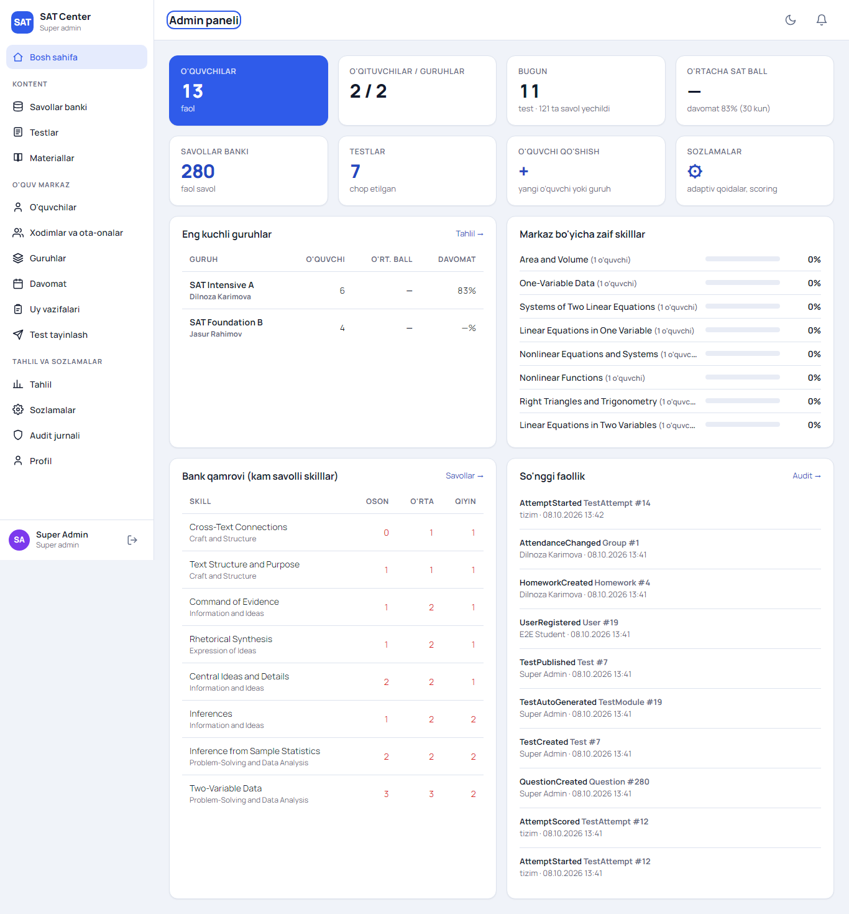
Admin paneli: markaz statistikasi, guruhlar, zaif skilllar, bank qamrovi, so'nggi faollik.
5.1. Savollar banki
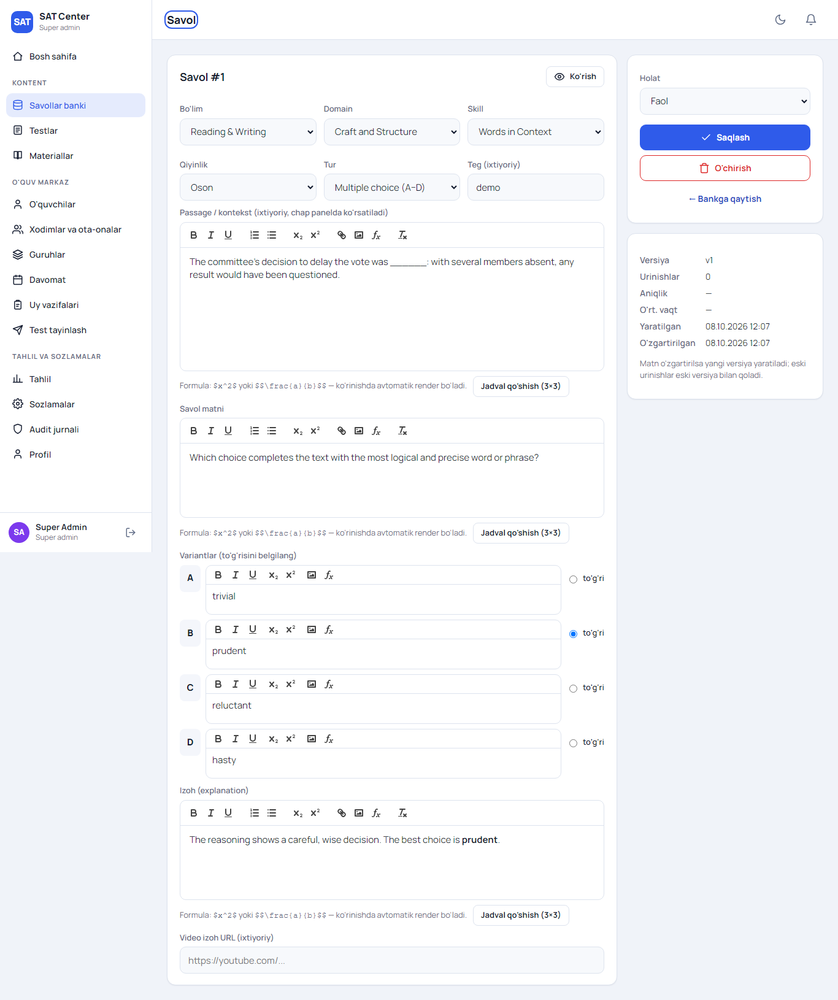
Savol tahrirlash: bo'lim, domain, skill, qiyinlik, tur; passage, savol matni, variantlar, izoh, video.
- Ro'yxatda qidirish (matn, #id, teg) va filtrlar: bo'lim, domain, skill, qiyinlik, holat, tur.
- Yangi savol: bo'lim/domain/skill/qiyinlik majburiy. Tur: Multiple choice (A–D, to'g'risini belgilang) yoki SPR (son javob; bir nechta qabul qilinadigan javob
| bilan: 2/3|0.667).
- Muharrir: qalin, kursiv, ro'yxat, jadval, rasm yuklash, havola. Formulalar LaTeX ko'rinishida:
$x^2$ yoki $$\frac{a}{b}$$ — o'quvchi ko'rinishida avtomatik render bo'ladi.
- Holatlar: Qoralama (testga tushmaydi), Tekshiruvda, Faol (ishlatiladi), Arxiv (yangi testga tanlanmaydi, eski urinishlar buzilmaydi). Faol savolda izoh bo'lishi shart.
- Versiyalash: savol matni o'zgartirilsa yangi versiya yaratiladi; eski urinishlar eski versiya bilan qoladi.
- «Ko'rish» — o'quvchi ko'radigan ko'rinish. O'xshash savollar bo'lsa ogohlantirish chiqadi.
- Import / Export (JSON): ko'p savolni bir yo'la yuklash. Export namuna formatni beradi.
5.2. Test builder
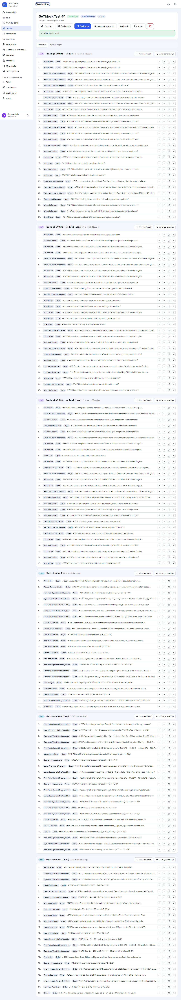
Test builder: modullar (R&W M1, M2 Easy, M2 Hard, Math M1, M2 Easy, M2 Hard), savollar, avto-generatsiya.
- «Testlar» → «Yangi test»: nom, tur (Diagnostik, To'liq SAT, Bo'lim, Modul, Mavzu), adaptiv belgisi. Modullar skeleti avtomatik yaratiladi.
- Har modulga savol qo'shish: «Savol qo'shish» (bankdan tanlash, filtr bilan) yoki «Avto-generatsiya» (savollar soni, qiyinlik va domain foizlari). Tartibni ↑↓ bilan o'zgartirish.
- «Sozlamalar»: nom, tavsif, tanaffus, scoring versiyasi, modul vaqtlari, savollarni aralashtirish, hammaga ochiq.
- «Preview» — testni o'quvchi ko'rinishida o'zingiz ishlab ko'rasiz (natija statistikaga kirmaydi).
- «Chop etish» — validatsiya: modullar to'liq, savollar faol, vaqt bor, dublikat yo'q, adaptiv modullar soni qoidaga mos. Xatolar ro'yxati ko'rsatiladi.
- Chop etilgan testni «Tayinlash» (guruh/o'quvchi, muddat, urinishlar). «Urinishlar» yorlig'ida natijalar va «Qayta hisoblash» (audit bilan).
5.3. O'quvchilar, xodimlar, guruhlar
- O'quvchilar: filtrlar (ism, holat, guruh, ball), «O'quvchi qo'shish» (ism, telefon, parol, maqsad, guruh). O'quvchi sahifasida ma'lumotlarni tahrirlash, holat (Faol, Muzlatilgan, Ketgan, Bitirgan), guruhga biriktirish/chiqarish, ota-onani bog'lash, ota-ona kodi va to'liq progress.
- Xodimlar va ota-onalar: o'qituvchi, assistent, admin, ota-ona yaratish va tahrirlash; o'qituvchiga «Savollar bankiga ruxsat»; hisobni o'chirish/yoqish; parol o'rnatish.
- Guruhlar: nom, kurs, o'qituvchi, assistent, xona, dars kunlari va vaqti (o'qituvchi yoki xona band bo'lsa ogohlantiradi), o'quvchilarni qo'shish.
- Materiallar: fayl (PDF, Word, rasm, video, 25 MB gacha) yoki havola, kategoriya, ixtiyoriy guruh.
5.4. Sozlamalar
- Umumiy: markaz nomi, zaif/kuchli skill chegaralari, skillni baholash uchun minimal savollar soni, tanaffus, modul vaqtlari, tavsiya savollar soni, mashq eslatmasi soati, standart scoring versiyasi, mustaqil ro'yxatdan o'tishga ruxsat.
- Adaptiv qoidalar: har bo'lim uchun 1-modul savollar soni va cutoff (shuncha to'g'ri javob — Hard, kam bo'lsa — Easy).
- Scoring jadvali: raw (to'g'ri javoblar) → scaled (200–800) jadvali, Hard/Easy/Standard yo'nalishlar uchun, versiyalangan. Biznes tasdiqlagan jadvalni «Tahrirlash» orqali
raw,scaled qatorlar bilan kiriting.
- Domain va skilllar: SAT taksonomiyasini qo'shish/tahrirlash.
5.5. Audit jurnali
Kim, qachon, nima qilgani: savol/test yaratish va o'zgartirish, chop etish, tayinlash, o'quvchi va guruh o'zgarishlari, davomat, ballarni qayta hisoblash, sozlamalar.
6. Ota-ona uchun
Kirgach «Farzandim» sahifasi: joriy ball, maqsad, aniqlik, davomat, ball dinamikasi, zaif skilllar. Yorliqlar: Skilllar, Testlar (natijalar va javoblar), Xatolar, Vaqt, Davomat, Uy vazifasi. Bir nechta farzand bo'lsa yuqorida tanlash tugmalari. Yana bir farzandni Profil → «Farzandni bog'lash» orqali kod bilan qo'shish mumkin.
Telegram'ga keladi: farzand darsga kelmasa yoki kechiksa, test natijasi chiqsa.
7. Telegram bot
| Buyruq | Vazifasi |
|---|
/start | Boshlash: telefon raqamni yuborish (hisobni bog'lash yoki ro'yxatdan o'tish). |
/login | Saytga parolsiz kirish havolasi (15 daqiqa amal qiladi). |
/help | Buyruqlar ro'yxati. |
/cancel | Boshlangan amalni bekor qilish. |
Bildirishnomalar (Profil → Bildirishnomalar bo'limida yoqib/o'chirib qo'yiladi): test natijalari, davomat, uy vazifasi va tayinlangan testlar, kunlik mashq eslatmasi (bugun hali mashq qilmagan o'quvchilarga belgilangan soatda).
8. Tez-tez so'raladigan savollar
| Savol | Javob |
|---|
| Test paytida internet uzildi | Javoblar brauzerda saqlanadi, ulanish qaytgach yuboriladi. Taymer serverda — davom etadi. Sahifani yangilab «Davom ettirish» ni bosing. |
| «Bu test boshqa oynada ochiq» | Test boshqa yorliq/qurilmada ochiq. Uni yoping; 20 soniyadan so'ng «Qayta tekshirish» ni bosing. |
| Vaqt tugadi | Modul avtomatik yakunlanadi, berilgan javoblar hisoblanadi, keyingi modul (yoki natija) ochiladi. |
| Parolni unutdim | Kirish → «Parolni unutdingizmi?» → Telegram kodi bilan kiring → Profilda yangi parol. |
| Telegram kod kelmayapti | Botda Start bosib raqamingizni «Telefon raqamni yuborish» tugmasi orqali yuboring (qo'lda yozilgan raqam qabul qilinmaydi). Raqam saytda kiritilgan bilan bir xil bo'lishi kerak. |
| Testni to'xtatmoqchiman | Tools → «Testdan chiqish». Urinish natijasiz yakunlanadi va urinishlar sonidan hisoblanadi. |
| Ball qanday hisoblanadi? | Har bo'limda to'g'ri javoblar soni (raw) scoring jadvali orqali 200–800 ballga aylantiriladi; umumiy = R&W + Math. Jadval admin Sozlamalarida. |
| Savol xato ko'rinadi | O'qituvchi yoki adminga savol raqamini (#id) ayting; admin savolni tuzatadi, eski natijalar o'zgarmaydi. |
| Mobil telefonda ishlaydimi? | Bosh sahifa, mashq, tahlil, materiallar — ha. To'liq test desktop/planshet uchun mo'ljallangan (katta ekran tavsiya etiladi). |
9. Demo hisoblar
Platformani sinab ko'rish uchun (parol: demo123). Haqiqiy ishga tushirishdan oldin bu hisoblarni o'chirib yoki parollarini o'zgartirib qo'ying.
| Rol | Telefon |
|---|
| Super admin | +998942922288 |
| Admin | +998901111110 |
| O'qituvchi (SAT Intensive A) | +998901111111 |
| O'qituvchi (SAT Foundation B) | +998901111112 |
| Assistent | +998901111113 |
| O'quvchilar | +998902000000 … +998902000009 |
| Ota-ona (Ali Valiyevning) | +998903000000 |
SAT Platform · Foydalanuvchi qo'llanmasi · 2026